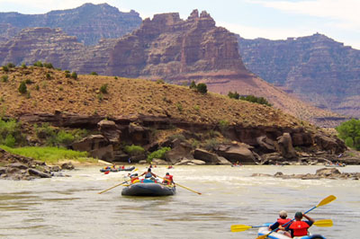
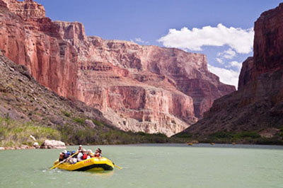
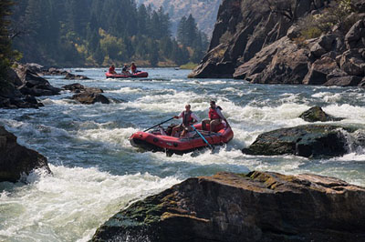

Current Weather for Riggins Idaho
Currently:
High:
Humidity:
Wind Speed:
Salmon River Adventures
The Salmon River flows 425 miles, drains over 14,000 square miles and drops more than 7,000 vertical feet from its headwaters. Natural and untamed, the Salmon River is protected by Congress as one of America’s first Wild and Scenic Rivers. It has shaped its course through a rugged and diverse landscape providing unique river trips you will only experience in Idaho.
The Salmon River flows through the vast Frank Church - River of No Return Wilderness and is the second deepest gorge on the American continent. The Salmon River is divided by name into different sections, namely the Main Salmon, the Middle Fork of the Salmon River and the Lower Salmon. Any section of the Salmon River rafting is perfect for your family or group getaway with a great mixture of fun rapids, calm floats, great swimming and peaceful camping.
Main Fork
Experience 5 days exploring Idaho's rugged and astounding wilderness. More moderate but exciting whitewater on this stretch of canyon makes this river trip a perfect introduction to rafting and camping without sacrificing any of the grandeur.
Middle Fork
A Middle Fork Salmon River rafting trip draws visitors from around the globe to experience over 100 Idaho whitewater rapids, fish clear alpine waters, relax in natural hot springs, hike to magnificent waterfalls, and camp in mountain meadows.
Lower Fork
Uniquely equipped with a dedicated “River Jester” to entertain the children with nature hikes and fun activities, the Salmon River Canyons Family Magic trip, on the Lower Salmon, is the perfect family rafting trip for younger families. Soak up rich scenic wonder and history while splashing toward huge sandy camping beaches. A separate kids-only menu treats the kids to dinner at an earlier hour, while the more mature palate will enjoy nightly riverside gourmet.